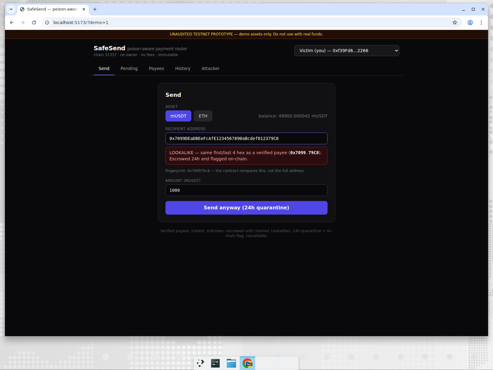
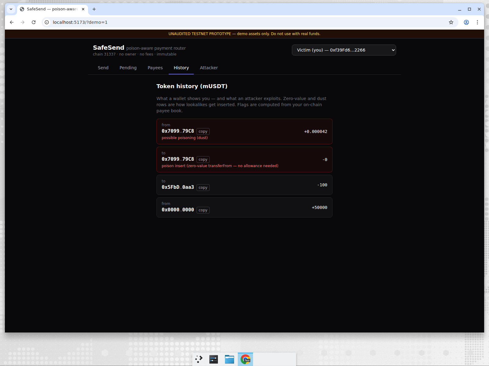
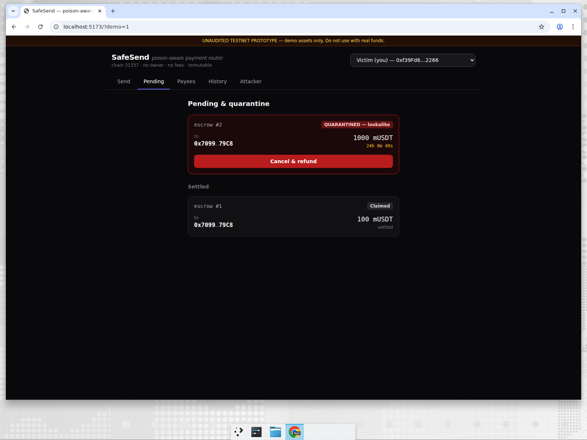
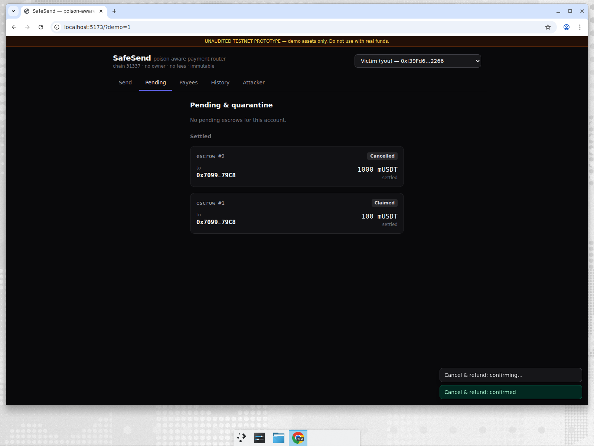
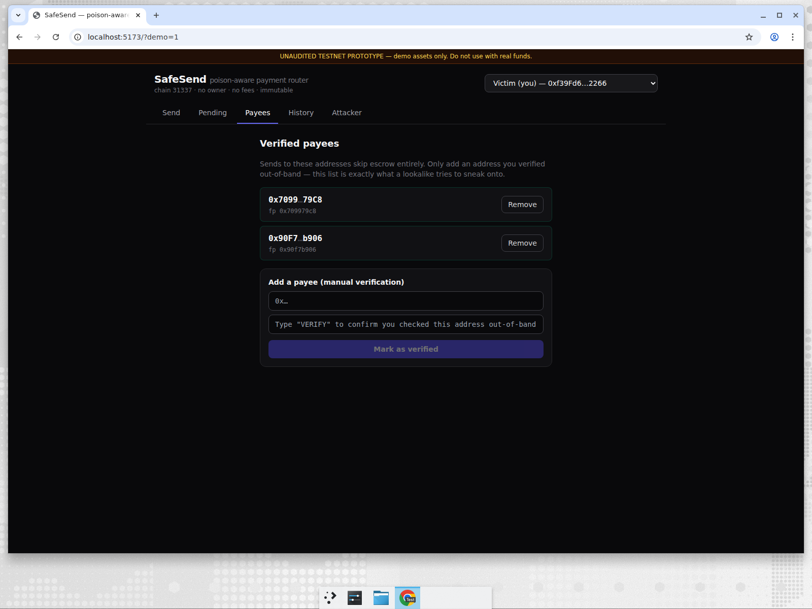
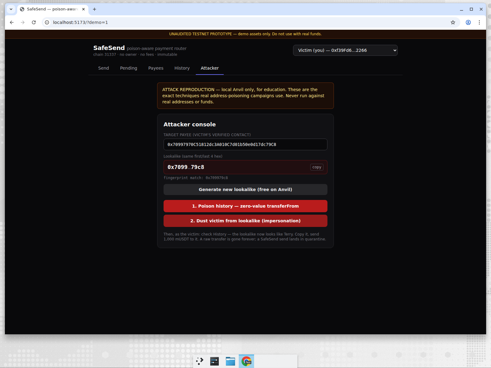

Address poisoning, stopped at send time.
A verified payee gets paid instantly. An unknown address waits in a cancellable escrow. A lookalike matching a trusted payee enters a 24-hour quarantine.
Local test environment: The video shows real contract interactions on Anvil with mock assets. This public page is a showcase; transactions require running the project and Anvil locally. SafeSend is unaudited and must not be used with real funds.
End-to-end walkthrough
Watch a poisoned history entry trigger a lookalike warning, quarantine, and full refund, followed by verified and unknown-payee flows.
Recorded on a fresh local Anvil chain with public test accounts and mock USDT. No mainnet funds or paid keys were used.
One router, three send paths
Instant delivery
Known payees receive funds directly. No escrow or waiting period.
Cancellable escrow
New recipients claim after the sender's cooldown. The sender can cancel while pending.
24-hour quarantine
A first/last-four fingerprint collision with a verified payee raises an on-chain flag and delays release.
See the protection in context
Screenshots from the local Anvil demo. The address-poisoning attack tool is educational and uses test assets only.






Run the real app locally
The contracts and interactive web UI are open source. You need Foundry and Node.js; the README has the complete setup.
git clone https://github.com/sharonbasovich/safesend.git
cd safesend
make anvil # separate terminal
make deploy-local
make seed
make web # http://localhost:5173/?demo=1